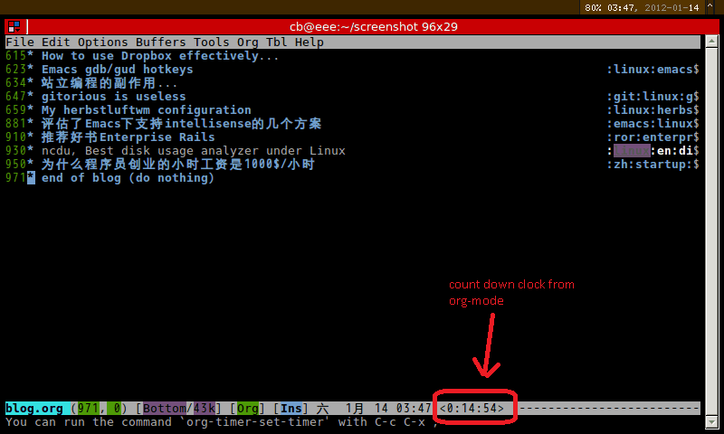

Clean up emacs mode line for tiny netbook
In Emacs, status bar at the bottom of the buffer is called the mode-line.
It contains too much information for me because my screen is tiny (I use the netbook Eee PC 701 whose LCD resolution is 800x480).
For example, org-mode will append some information at the mode-line which is beyond my tiny screen.
See customizing the mode-line for the solution to clean up the mode-line.
But there is one problem. The variable global-mode-string is missing in mode-line. So my favorite org-mode trick M-x org-timer-set-timer won't work.
Here is my fixed version.
- screenshot

- Emacs Lisp code
;; @see http://emacs-fu.blogspot.com/2011/08/customizing-mode-line.html
;; But I need global-mode-string,
;; @see http://www.delorie.com/gnu/docs/elisp-manual-21/elisp_360.html
;; use setq-default to set it for /all/ modes
(setq-default mode-line-format
(list
;; the buffer name; the file name as a tool tip
'(:eval (propertize "%b " 'face 'font-lock-keyword-face
'help-echo (buffer-file-name)))
;; line and column
"(" ;; '%02' to set to 2 chars at least; prevents flickering
(propertize "%02l" 'face 'font-lock-type-face) ","
(propertize "%02c" 'face 'font-lock-type-face)
") "
;; relative position, size of file
"["
(propertize "%p" 'face 'font-lock-constant-face) ;; % above top
"/"
(propertize "%I" 'face 'font-lock-constant-face) ;; size
"] "
;; the current major mode for the buffer.
"["
'(:eval (propertize "%m" 'face 'font-lock-string-face
'help-echo buffer-file-coding-system))
"] "
"[" ;; insert vs overwrite mode, input-method in a tooltip
'(:eval (propertize (if overwrite-mode "Ovr" "Ins")
'face 'font-lock-preprocessor-face
'help-echo (concat "Buffer is in "
(if overwrite-mode "overwrite" "insert") " mode")))
;; was this buffer modified since the last save?
'(:eval (when (buffer-modified-p)
(concat "," (propertize "Mod"
'face 'font-lock-warning-face
'help-echo "Buffer has been modified"))))
;; is this buffer read-only?
'(:eval (when buffer-read-only
(concat "," (propertize "RO"
'face 'font-lock-type-face
'help-echo "Buffer is read-only"))))
"] "
;;global-mode-string, org-timer-set-timer in org-mode need this
(propertize "%M" 'face 'font-lock-type-face)
" --"
;; i don't want to see minor-modes; but if you want, uncomment this:
;; minor-mode-alist ;; list of minor modes
"%-" ;; fill with '-'
))